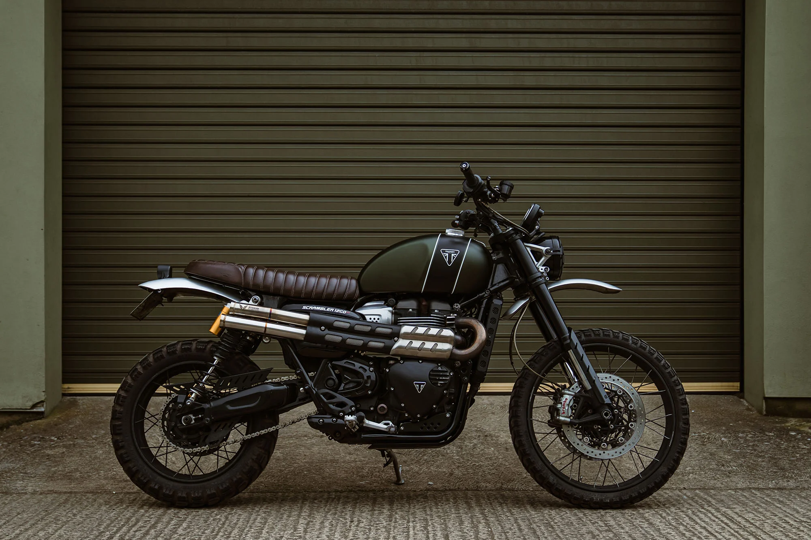
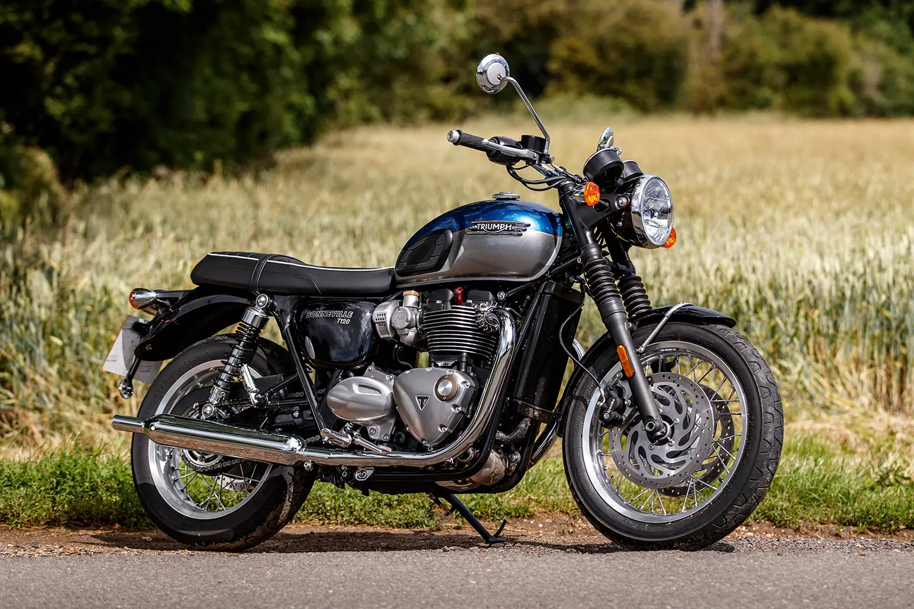
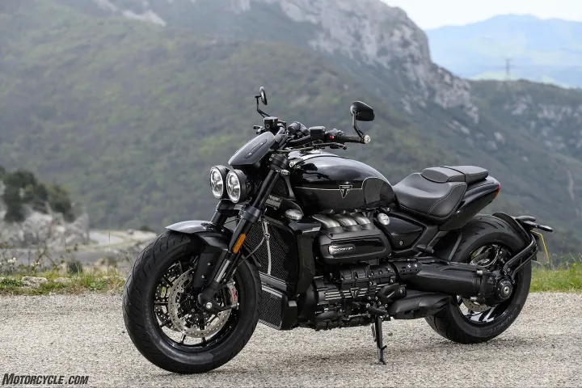

I. Scrambler 1200

For those who look to add small details that create a big visual difference, we have
engineered these shotgun style slip-ons with a machined end detail incorporated. Based on a skill we learned in Formula 1, these small conical end details add visual flavour to your ride without being too obvious. Thanks to the positive feedback on our prototype exhaust fitted to our show bike at The Bike Shed Event, these detailed double-barrel shotgun slip-ons are now available as a ready-to-ride product.
The machined end detail slip-ons are carried out in brushed high-end 304 stainless steel, and they come standard prepared with sound dampening that ensures the right sound, with removable DB killers to lower the volume when needed.
Two options of DB killers are available, the Open DB is less restrictive giving a more subtle difference from when the baffles are out. The Quiet DB is more restrictive and therefore the quietest option. Both the Open and Quiet DB killers are removable and are held in place with M5 bolts within the exhaust exit.
II. Boneville T120

KThe 1200cc parallel-twin Triumph Bonneville T120 sits midway between simple, authentic retros like Royal Enfields best-selling Interceptor, and modern bikes in period getup like the BMW R nineT and Yamaha XSR900. It has plenty of traditional style, a rumbling touchy-feely engine and lashings of easy-going charm, balanced with up-to-date technology, rideability and accessible performance. Its an easy-to-ride roadster, perhaps closest to Hondas CB1100 in terms of feel, positioning and dynamic.
Purists in their Union Flag underpants might grumble about the fact that the T120 is made in Thailand, rather than Hinckley. They will probably tut at the discreet radiator nestled in front of the engine and roll their eyes at traction control, too.
III. Rocket 3

When it became apparent the 2294cc displacement of the original Rocket III engine from 2004 simply wasnt displacing enough, Triumph decided to add another 164 cubic centimeters to the mix bringing the engines capacity to 2458cc in 2019. The 2025 Rocket Storm models retain that same displacement. Still, Triumph software engineers digitally massaged an additional 15 horsepower and three lb-ft of torque from the inline three-cylinder, bringing its claimed totals to 180 hp and 166 lb-ft of torque. And right in the nick of time, too, because the 165 hp and 163 lb-ft of torque of last years model was becoming a real yawner.
Even more amazing is the way in which the 2025 Rocket 3 Storm goes about the business of being a motorcycle. Underway, the Storms 700-pound wet weight and 66-inch wheelbase dont seem as daunting as those figures imply. Triumph claims the dry sump engine and corresponding lack of an oil pan beneath the behemoth allows the heavy crankshaft to be positioned as low as possible. For sure theyre right, because while “flickable” certainly isnt the correct descriptor, the Rocket 3 Storm hastens from left to right lean angles with more aplomb than its spec sheet would indicate.